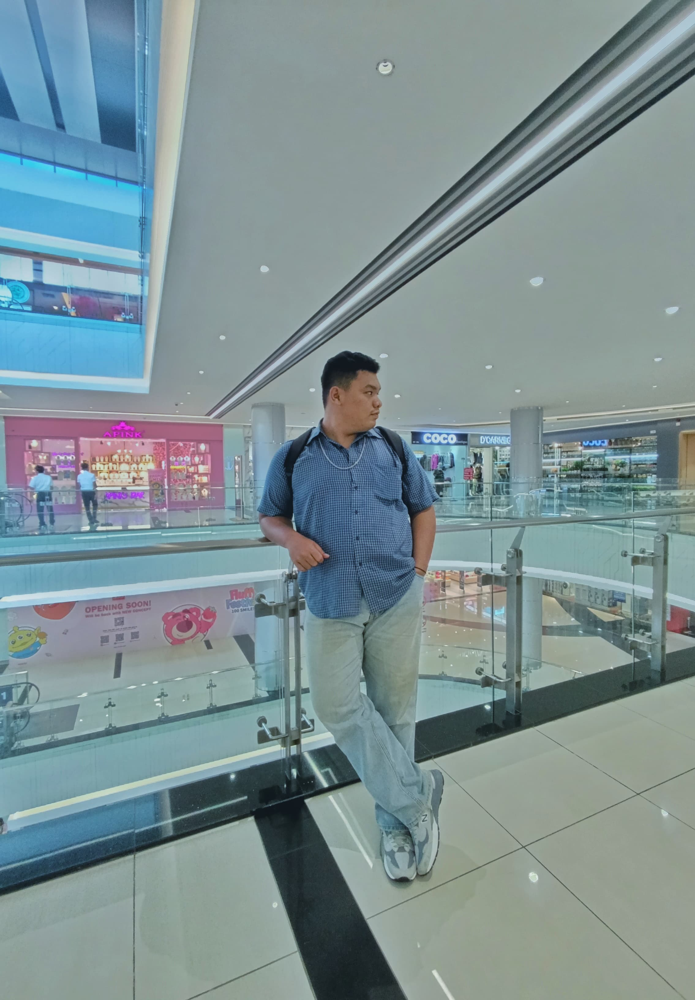

Profil Programer Website

Ahmad Abel Ananta Lubis
NPM: 230210100
Prodi: Teknik Informatika
Universitas: Universitas Putera Batam
Email: ahmadabel486@gmail.com
Deskripsi: Saya adalah mahasiswa yang sedang belajar pengembangan web, terutama HTML, CSS, dan JavaScript. Website ini dibuat sebagai bagian dari tugas proyek ujian tengah semester mata kuliah Pemograman Web.